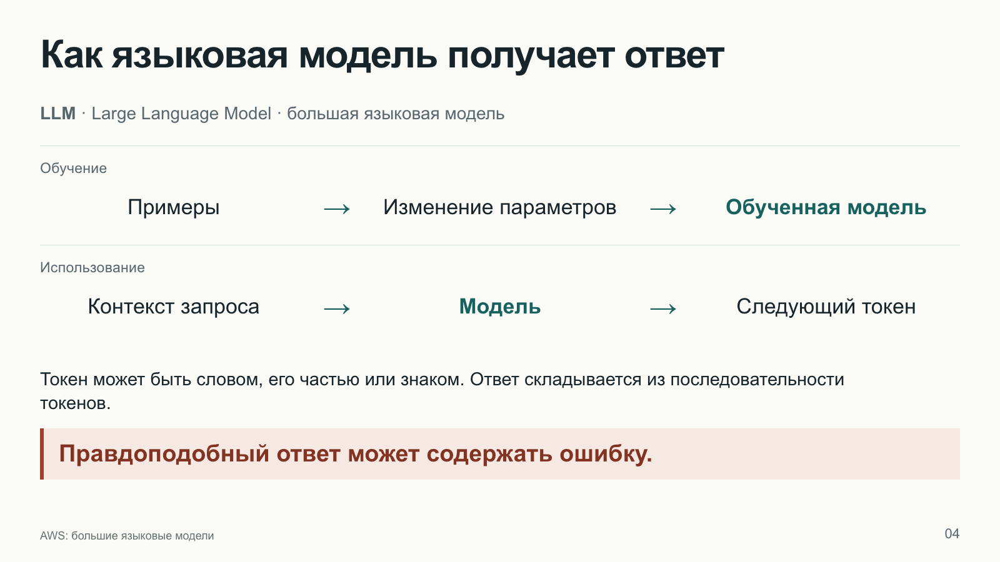
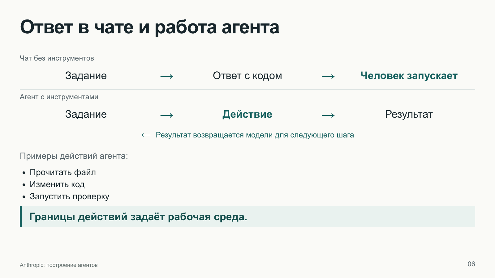
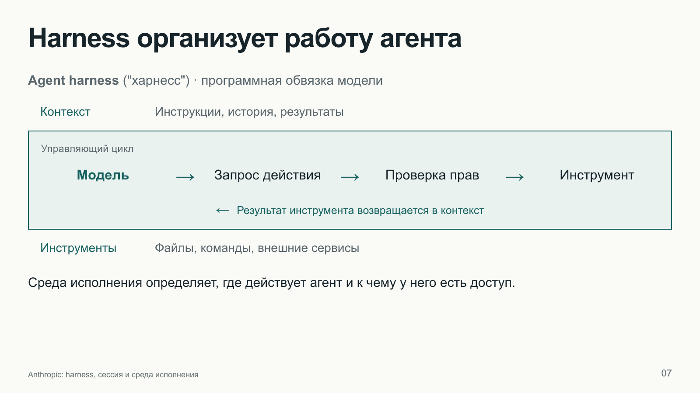
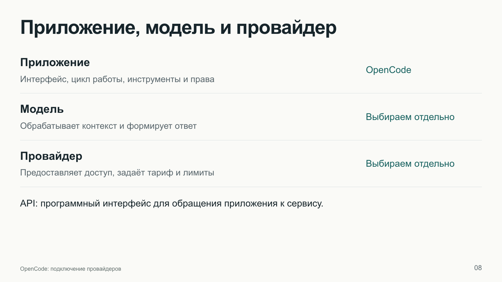

Слайд 01
Слайд 01 Слайд 02
Слайд 02 Слайд 03
Слайд 03
Слайд 04 Слайд 05
Слайд 05
Слайд 06
Слайд 07
Слайд 08 Слайд 09
Слайд 09 Слайд 10
Слайд 10Снимок драфта от 8 ноября 2026: вертикальные списки, пояснения и дата внизу слайда. Открыть презентацию
Слайд 01Слайд 02Слайд 03
Слайд 04Слайд 05
Слайд 06
Слайд 07
Слайд 08Слайд 09Слайд 10